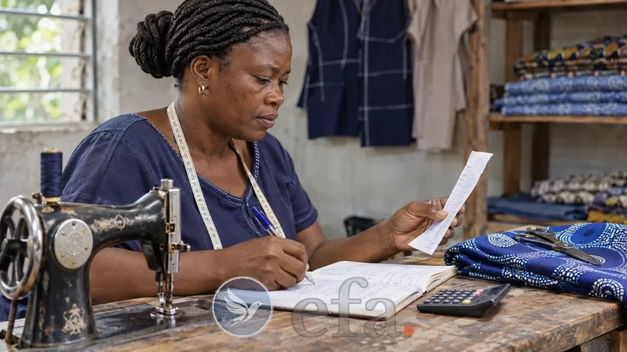
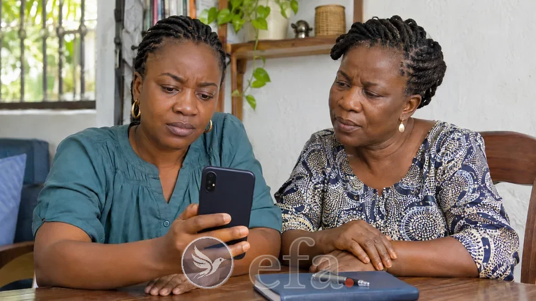

Les ateliers EFA · 57 ateliers
Choisissez un thème. Commencez par l’essentiel.
Pour chaque thème, nous avons retenu les 3 ateliers qui vous apportent le plus. Les autres vous attendent sur la page du thème, pour aller plus loin. Vos ateliers commencés restent dans Mon EFA.
Je continue
là où je me suis arrêtéLes essentiels · 9 ateliers
Mon budget au quotidien
Savoir où part l’argent, tenir un budget et se constituer une réserve.
 Essentiel 1
Essentiel 1Où est passé mon argent ?
14 activitésGratuit Essentiel 2
Essentiel 2Mon budget à zéro : une mission pour chaque franc
6 activitésAbonnésou 5 000 F à l’unité Essentiel 3
Essentiel 3Ma réserve de sécurité
12 activitésGratuitLes essentiels · 13 ateliers
Épargner et placer
Choisir un placement selon la date de vos projets, et le comprendre avant de signer.
 Essentiel 1
Essentiel 1Où placer une somme dont j’aurai besoin dans 6 mois, 2 ans ou 5 ans ?
14 activitésGratuit Essentiel 2
Essentiel 2DAT, OPCVM, FCPE : les placements expliqués
14 activitésAbonnés Essentiel 3
Essentiel 3Comment fonctionne un fonds commun de placement ?
6 activitésAbonnésou 5 000 F à l’unitéLes essentiels · 12 ateliers
Investir en Bourse (BRVM)
De zéro à votre portefeuille : comprendre, choisir une action, construire, encaisser des dividendes.
 Essentiel 1
Essentiel 1Mes premiers pas en Bourse
31 activitésAbonnéschapitre 1 offert Essentiel 2
Essentiel 2Acheter sa première action à la BRVM
6 activitésAbonnésou 5 000 F à l’unité Essentiel 3
Essentiel 3Construire son portefeuille à la Bourse
14 activitésAbonnéschapitre 1 offertLes essentiels · 10 ateliers
Crédit et dettes
Emprunter quand c’est utile, en connaître le vrai coût, et sortir des dettes.
 Essentiel 1
Essentiel 1Ce que mon crédit coûte vraiment
6 activitésGratuit Essentiel 2
Essentiel 2Le crédit est-il fait pour moi ?
6 activitésAbonnés Essentiel 3
Essentiel 3Sortir de mes dettes
14 activitésAbonnés
Les essentiels · 6 ateliers
Mon activité
Séparer la caisse de la maison, savoir si l’on gagne vraiment, investir au bon moment.
 Essentiel 1
Essentiel 1Où est passé l’argent de mon activité ?
11 activitésAbonnés Essentiel 2
Essentiel 2Mon activité gagne-t-elle vraiment de l’argent ?
12 activitésAbonnés Essentiel 3
Essentiel 3Investir dans une activité : est-ce que ça rapporte ?
13 activitésAbonnésLes essentiels · 6 ateliers
Famille et retraite
Préparer sa retraite, financer les études, faire face aux grands moments.
 Essentiel 1
Essentiel 1Préparer ma retraite : droits, besoins et décisions
9 activitésAbonnésou 5 000 F à l’unité Essentiel 2
Essentiel 2Préparer ma retraite sans pension
15 activitésAbonnés Essentiel 3
Essentiel 3Financer les études de mon enfant
13 activitésAbonnésLes essentiels · 2 ateliers
Terrain et logement
Savoir ce que vos revenus permettent, et acheter un lot sans se faire avoir.


Les essentiels · 5 ateliers
Éviter les arnaques
Reconnaître la promesse trop belle et le faux conseiller, avant de payer.
 Essentiel 1
Essentiel 1On vous promet un rendement garanti : que vérifier avant de payer ?
13 activitésGratuit Essentiel 2
Essentiel 2Faux conseiller, faux placement : repérer la manipulation
13 activitésGratuit Essentiel 3
Essentiel 3Avant de confier son argent ou d’investir
10 activitésAbonnés À la carte
À la carteAcheter, construire ou attendre : que permettent vraiment mes revenus ?
14 activitésGratuit À la carte
À la carteAcheter un lot
10 activitésGratuit À la carte
À la carteMon activité gagne-t-elle vraiment de l’argent ?
12 activitésAbonnés À la carte
À la carteAssurance-vie : comprendre ce que je signe
14 activitésAbonnésÀ la carteAvant de confier son argent ou d’investir
10 activitésAbonnés À la carte
À la carteBien utiliser mon crédit
6 activitésAbonnés À la carte
À la carteLes bons du Trésor, de A à Z
6 activitésAbonnésou 5 000 F à l’unité À la carte
À la carteMon budget qui tient
14 activitésGratuitÀ la carteMon budget à zéro : une mission pour chaque franc
6 activitésAbonnésou 5 000 F à l’unité À la carte
À la carteBien choisir sa microfinance
6 activitésAbonnés À la carte
À la carteMon commerce n’a pas de comptabilité
8 activitésAbonnés À la carte
À la carteConstruire son portefeuille à la Bourse
14 activitésAbonnéschapitre 1 offert À la carte
À la cartePlacements à court terme : moins de risque, mais pour quel objectif ?
6 activitésAbonnésou 5 000 F à l’unité À la carte
À la carteCe que mon crédit coûte vraiment
6 activitésGratuitÀ la carteLe crédit est-il fait pour moi ?
6 activitésAbonnés À la carte
À la carteEthereum, Solana et TON : qu’achetez-vous vraiment ?
6 activitésAbonnésou 5 000 F à l’unité À la carte
À la carteSe préparer au décès d’un parent, sans s’endetter
14 activitésGratuit À la carte
À la carteComprendre l’économie pour mieux investir
13 activitésAbonnésou 5 000 F à l’unité À la carte
À la carteÉpargner ne suffit pas : que faire de l’argent qui reste ?
6 activitésAbonnésou 5 000 F à l’unité À la carte
À la carteLire les états financiers d’une entreprise cotée
6 activitésAbonnésou 5 000 F à l’unité À la carte
À la carteFinancer les études de mon enfant
13 activitésAbonnés À la carte
À la carteÉviter le surendettement
5 activitésAbonnés À la carte
À la carteFaux conseiller, faux placement : repérer la manipulation
13 activitésGratuit À la carte
À la carteMaîtriser ses finances personnelles : de l’argent qui entre à l’argent qui construit
6 activitésAbonnésou 5 000 F à l’unitéÀ la carteComment fonctionne un fonds commun de placement ?
6 activitésAbonnésou 5 000 F à l’unité À la carte
À la carteGrandir avec le crédit
6 activitésAbonnés À la carte
À la carteRecevoir une grosse somme
13 activitésAbonnés À la carte
À la carteInvestir et entreprendre quand les prix montent
6 activitésAbonnésou 5 000 F à l’unitéÀ la carteInvestir dans une activité : est-ce que ça rapporte ?
13 activitésAbonnés À la carte
À la carteInvestir pour les dividendes
6 activitésAbonnésou 5 000 F à l’unité À la carte
À la carteLire un business plan comme un financeur
13 activitésAbonnés À la carte
À la carteLire une société cotée comme un investisseur
13 activitésAbonnéschapitre 1 offert À la carte
À la carteMa banque va-t-elle me prêter ?
8 activitésAbonnés À la carte
À la carteInvestir sur un marché émergent : comprendre avant de comparer
6 activitésAbonnésou 5 000 F à l’unité À la carte
À la carteMobile money et frais : ce que coûtent les petits transferts
14 activitésAbonnésÀ la carteOù est passé l’argent de mon activité ?
11 activitésAbonnés À la carte
À la carteOù est passé mon argent ?
14 activitésGratuit À la carte
À la carteDAT, OPCVM, FCPE : les placements expliqués
14 activitésAbonnésÀ la carteOù placer une somme dont j’aurai besoin dans 6 mois, 2 ans ou 5 ans ?
14 activitésGratuit À la carte
À la carteUn portefeuille qui paie mes factures : la stratégie des dividendes
13 activitésAbonnésÀ la carteAcheter sa première action à la BRVM
6 activitésAbonnésou 5 000 F à l’unité À la carte
À la cartePrêter à un proche, ou donner ?
13 activitésAbonnés À la carte
À la carteQuand le crédit va mal
6 activitésAbonnés À la carte
À la carteRembourser sans se noyer
6 activitésAbonnésÀ la carteOn vous promet un rendement garanti : que vérifier avant de payer ?
13 activitésGratuitÀ la carteMa réserve de sécurité
12 activitésGratuitÀ la cartePréparer ma retraite : droits, besoins et décisions
9 activitésAbonnésou 5 000 F à l’unitéÀ la cartePréparer ma retraite sans pension
15 activitésAbonnés À la carte
À la carteInvestir dans les placements à revenu fixe
9 activitésAbonnésou 5 000 F à l’unitéÀ la carteSortir de mes dettes
14 activitésAbonnés À la carte
À la carteConstruire sa stratégie d’investissement
7 activitésAbonnésou 5 000 F à l’unité À la carte
À la carteMa tontine devient un club d’investissement
8 activitésAbonnésou 5 000 F à l’unité À la carte
À la carteMa tontine devient une spirale
12 activitésAbonnés À la carte
À la carteVente en réseau : combien ça rapporte vraiment ?
13 activitésGratuitÀ la carteMes premiers pas en Bourse
31 activitésAbonnéschapitre 1 offert À la carte
À la carteMon premier ordre à la Bourse (BRVM)
Avec Élysée JohnsonAbonnéschapitre 1 offert À la carte
À la carteJeu : mon portefeuille face à la baisse
Jeu · 5 minutesJeu gratuit
Avec Élysée Johnson
Votre cas, avec le fondateur d’EFA.
Des ateliers approfondis où il répond personnellement à votre question, et des rendez-vous pour décider.
Vous ne savez pas par où commencer ? Le diagnostic vous indique le thème qui compte le plus pour vous aujourd’hui, en 3 minutes.
Faire mon diagnostic